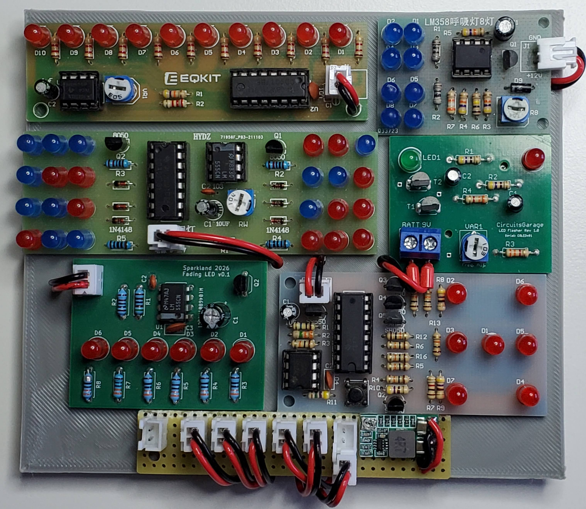
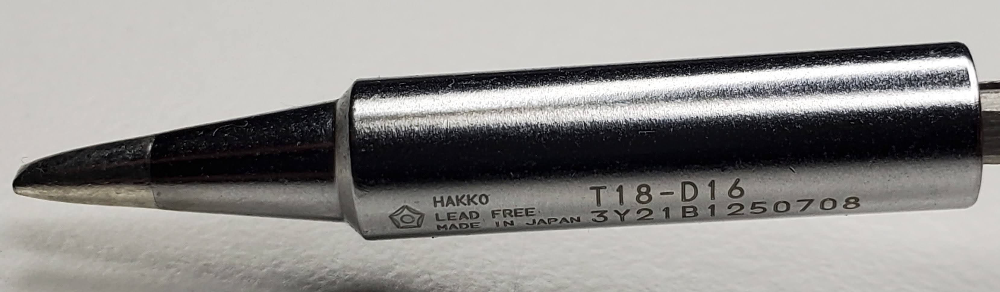
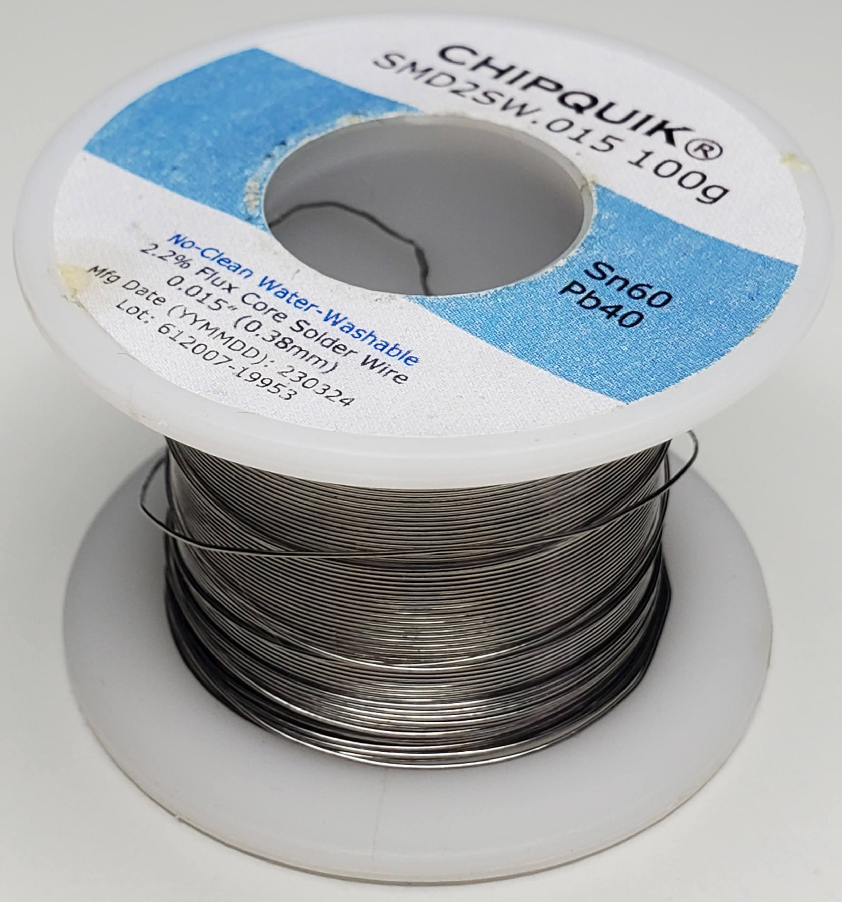
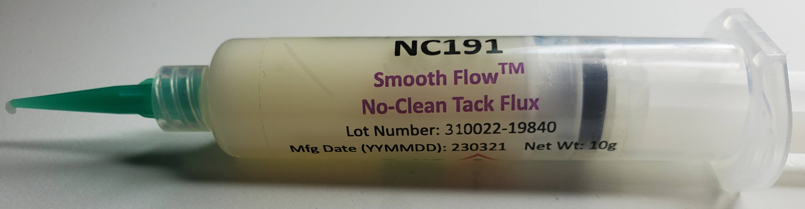
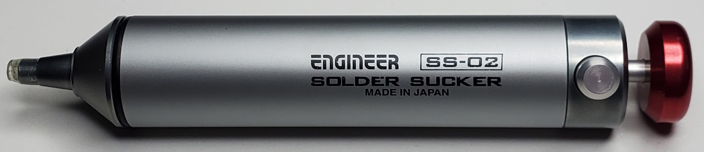
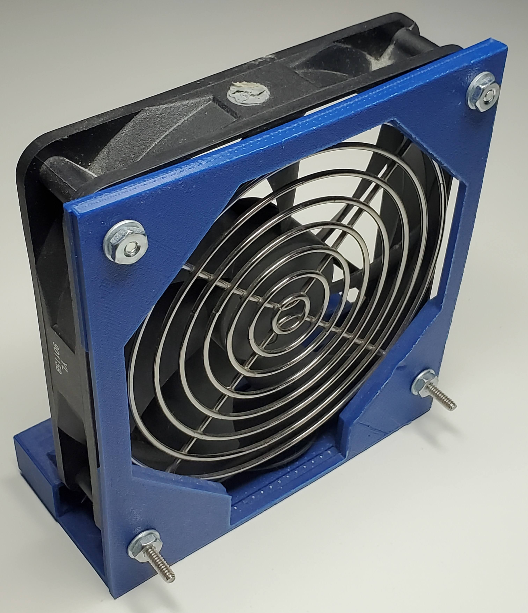

Learn soldering electronics by practicing

Introduction
Soldering electonics is hard.
And when trying to solder components, wires or doing some important repairs, it doesn’t always go as planned.
Especially, when it’s not done often.
I remember being frustrated when breaking devices or ruining projects because of my lack of experience and using the wrong tools.
Practice
What I suggest is to practice soldering.
Any way you want is fine. Some people solder components on prototype board until they get a nice solder joint.
But if the circuit don’t do anything at the end, I think it miss the point.
Soldering practice kits
That’s why I’m suggesting to buy soldering practice kits.
After finishing a few, you end up doing hundreds of solder on real circuits and components.
I recommend to find cheap chinese ones on Aliexpress, Ebay or Amazon
Support
You can also support this blog by getting the
practice kit
I sell on Ebay.
I got inspired by the other kits I solder in the past.
The though of assembling practice kits came to me when I went to a hackers convention. There was an activity where we had to solder badges (small circuits that lights up). If we succeed, we were handed another one a step more difficult and so on. It was SMD components, which is more difficult in my opinion. I’m suggesting to start with Through Holes Components (THC) but feel free to choose SMD if that’s what you want.
These soldering kit makes interesting gift. The bare-bone PCB with the components looks cool by itself. These flashing, fading, running LEDs are interesting effects. A lot of the time, these circuit are 5V and are easy to power using a portable battery or a phone charger.
Technique
I’m far from an expert but here’s a few basic tips I learned along the way:
- Wait about 5 minutes after you turned on the soldering iron to let it heat up.
- Leave a bit of solder on both side of the tip when you solder and before you turn off the iron. It protects the tip.
- When the iron is on the stand the solder on the tip can becomes brown-ish. Clean it with your metal sponge than reapply solder.
- Start with the smallest footprint component first. Like resistors, diodes, etc.
To solder a component, have already a bit of solder on the tip. Touch the pad on the PCB and on the component lead at the same time. With the solder wire add solder on the pad and the lead. Sometimes you have to touch the tip of the iron to start the melting process. Don’t put to much solder.
If solder don’t flow naturally on the metal parts because it’s an older electronic parts, add solder paste.
Watch this
this tutorial
for a more complete guide.
Equipment
This section contain the minimum tools needed to solder without too much hassle.
Soldering iron
Most people will start with these cheap iron they can get in any stores. But I would advice against using them. Maybe it can save the day if you have few solder to make and it’s the only tool available but don’t rely on them on your journey into electronics. They are not powerful enough and temperature will likely be unstable.
You need a decent soldering iron like the Hakko FX-888D or a Weller.
Tip
If I could only choose one tip for the rest of my life, I would go with a small the bezel like the Hakko T18-D16. It even work with SMD.

Solder
The first spool I got was thick 0.5mm solder. But thin wires it really where the magic reside.
Currently, I’m using 0.015 inch (0.38 mm) Sn60/Pb40. For safety reasons and ROTH compliance, non lead is usually preferred but I’m use to the lead solder that it is hard to switch.

Flux
Non-clean flux in a serynge is very important for SMD and if you have to repair an older device.

Solder sucker
There’s nothing worse than having to desolder a part and struggling. I’ve bought plenty of traditional solder suckers but they breaks easy and they don’t really have succion.
I was really happy when I found these Engineer japanese ones.

Fume extractor
In my experience it’s really easy to breath the fume from soldering and I don’t think it’s very healthy.
A fume extractor is a must for any electronic soldering. I’ve never own a real professional one. I’ve gotten away using a PC fan because it does brings the fume away from the face. Over the years I’ve made it better adding a better case around the fan and an on/off switch.
Later I could add PWM, a variable speed, a battery and a carbon filter.

Hand tool
- Non-serated plyers
- wire cutter
Third hand
The dream of having a third hand is real. Buy a decent third and it is really important.
Good lighting
You’ll need some kind of magnifier light.
Multimeter
A decend multimeter is a must to debug and diagnose.
Power
You can use a phone charger, a portable battery, a variable switching supply, a professionnal bench PSU, etc.